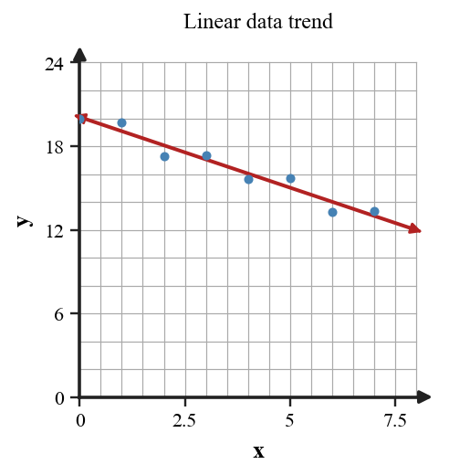

Algebra Practice 2.5 :::: Set 3
1. Give a simple linear model that is reasonably close to the data. State the approximate rate.
| x | Observed y |
|---|---|
| 0 | 7 |
| 1 | 4 |
| 2 | 3 |
| 3 | -1 |
2. Give a simple linear model that is reasonably close to the data. State the approximate rate.
| x | Observed y |
|---|---|
| 0 | 4 |
| 1 | 10 |
| 2 | 13 |
| 3 | 20 |
3. Give a simple linear model that is reasonably close to the data. State the approximate rate.
| x | Observed y |
|---|---|
| 0 | 11 |
| 1 | 11 |
| 2 | 15 |
| 3 | 16 |
4. Give a simple linear model that is reasonably close to the data. State the approximate rate.
| x | Observed y |
|---|---|
| 0 | 19 |
| 1 | 24 |
| 2 | 26 |
| 3 | 30 |
5. Give a simple linear model that is reasonably close to the data. State the approximate rate.
| x | Observed y |
|---|---|
| 0 | 2 |
| 1 | 5 |
| 2 | 10 |
| 3 | 12 |
6. Describe the direction of the trend.

7. Use the fitted line to estimate y when x=5.
8. Is a linear model reasonable for the displayed data? Explain briefly.
9. Would a prediction at x=40 be well supported by this graph? Explain.
10. A linear model is $y=3x+15$. Predict the output when $x=4$ and interpret the prediction as a model value, not an exact observed value.
11. A linear model is $y=-2x+12$. Predict the output when $x=5$ and interpret the prediction as a model value, not an exact observed value.
12. A linear model is $y=5x+40$. Predict the output when $x=6$ and interpret the prediction as a model value, not an exact observed value.
13. A linear model is $y=4x+7$. Predict the output when $x=7$ and interpret the prediction as a model value, not an exact observed value.
14. Assess whether the linear model is close enough to be useful over this data range. Use at least two rows as evidence.
| x | Observed | Model prediction |
|---|---|---|
| 0 | 6 | 5 |
| 1 | 6 | 7 |
| 2 | 9 | 9 |
| 3 | 13 | 11 |
15. Assess whether the linear model is close enough to be useful over this data range. Use at least two rows as evidence.
| x | Observed | Model prediction |
|---|---|---|
| 0 | 1 | 2 |
| 1 | 5 | 5 |
| 2 | 10 | 8 |
| 3 | 12 | 11 |
16. Assess whether the linear model is close enough to be useful over this data range. Use at least two rows as evidence.
| x | Observed | Model prediction |
|---|---|---|
| 0 | 20 | 20 |
| 1 | 21 | 19 |
| 2 | 19 | 18 |
| 3 | 16 | 17 |
17. Assess whether the linear model is close enough to be useful over this data range. Use at least two rows as evidence.
| x | Observed | Model prediction |
|---|---|---|
| 0 | 3 | 1 |
| 1 | 6 | 5 |
| 2 | 8 | 9 |
| 3 | 13 | 13 |
18. A model is $y=6x+15$. In a cost in dollars per visit situation, interpret the slope and starting value.
19. A model is $y=-4x+50$. In a water volume in liters per minute situation, interpret the slope and starting value.
20. A model is $y=8x+3$. In a distance in miles per hour situation, interpret the slope and starting value.
21. A model is $y=-2x+72$. In a temperature in degrees per hour situation, interpret the slope and starting value.
22. Data were collected for x-values from 2 through 12. A linear model predicts at x=11 and x=80. Which prediction is better supported and why?
23. A scatter plot bends strongly upward rather than clustering around a line. Assess whether a single linear model is a strong choice.
24. A fitted line misses every observed point by less than 1 unit, while the observed y-values are around 100. Is that evidence of a reasonably close fit? Explain.